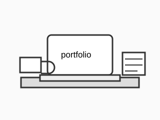

Я цікавлюся вебінтерфейсами, логікою побудови сторінок, UX-дизайн та майбутня робота
з JavaScript. Також мені подобається розробляти сайт.та систему контролю версій Git.
Освіта
Я навчаюся створювати правильну структуру сайту, працювати з формами, таблицями,
мультимедіа та поступово переходжу до оформлення сторінок за допомогою CSS.
Навчальні пріоритети
Семантична HTML-розмітка.
Робота з формами та таблицями.
Організація файлів у проєкті.
Командна робота через GitHub.
Інтереси
Мені цікаві вебінтерфейси, логіка побудови сторінок, UX-дизайн та майбутня робота
з JavaScript-фреймворками. Також я люблю розбиратися, як маленькі HTML-елементи
складаються у повноцінний сайт.
Мої технічні навички
Мої технічні навички
Технологія
Рівень
Досвід
HTML
Початківець
2 роки
Git
Початківець
декілька місяців
GitHub
Початківець
2 роки
CSS
Початкове ознайомлення
2 роки
Терміни, які я вже використовую
HTML
Мова розмітки для створення структури вебсторінки.
Git
Система контролю версій, яка допомагає зберігати історію змін.
Commit
Зафіксований набір змін у Git-репозиторії.

Моє умовне робоче місце для навчання веброзробці.Короткий аудіофрагмент як приклад мультимедіа на HTML-сторінці.↑